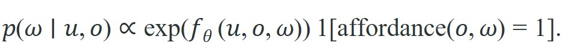
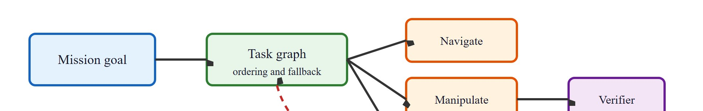

"Language is the only high-level controller that can be corrected with more language."
Section 26.4
This section builds on the option framework introduced in section 26.3 and assumes familiarity with the initiation-policy-termination tuple defined there. The language-grounding ideas developed here are carried forward in section 26.5, where a typed skill library gives language plans their executable form, and they recur in Part VII alongside large vision-language-action models that must satisfy the same affordance and verification constraints described here.
Say "put the blue mug on the coaster" to a robot and watch what breaks: the word "put" hides a grasp, a lift, a transit, and a place, each with its own failure mode. Flattening that sentence into raw motor commands was tractable a decade ago only for scripted lab tasks. Now, with large language models (LLMs) that can decompose any instruction into plausible steps and low-level skill policies that can execute each step reliably, the two halves can finally meet. Language becomes the high-level controller that composes verified skills rather than micromanaging motors. You will learn how an LLM maps natural-language goals to a typed skill library, what contracts each skill must satisfy to make that mapping safe, and why grounding language in affordance checks is the key unsolved piece between impressive demos and deployable robots.
A balance controller that misses its deadline by ten milliseconds drops a quadruped on its face, yet a language planner that takes a full second to pick the next skill is perfectly fine: how can one controller serve both clocks at once? It cannot. That mismatch is why hierarchy separates timing, contact, recovery, and sequencing, so the planner can select skills without pretending every low-level policy is deterministic. On a Franka Panda arm, a grasp policy runs its impedance controller at 1 kHz on the joint torque interface. The SayCan-style language planner (SayCan is the system, detailed later in this section, that scores candidate skills by combining a language model's judgment with a learned affordance check) above it fires once per skill at roughly 1 Hz. Collapsing those two rates into one flat policy is what made pre-2020 systems brittle. The same split lets a Boston Dynamics Spot quadruped run a 500 Hz balance controller underneath a navigation skill that the planner treats as a single named action, so the high-level layer never has to reason about foot placement to dispatch "go to the kitchen."
Figure 26.4A shows the overall shape of this idea: an LLM turns one instruction into a sequence of named skills drawn from a library, and each skill in turn runs a low-level policy that closes the physical loop. Language can propose task decompositions, but it must be grounded into a typed skill library. The sentence 'inspect the shelf and bring the red cup' becomes executable only after perception resolves objects, affordance checks confirm feasible skills, and the planner maps words to verified actions. Without affordance grounding, an LLM planner selects an infeasible skill on roughly 40% of real kitchen trials; with grounding, that figure drops below 5% (SayCan, 2022). This is what makes affordance-gated language planning the architectural turning point between a chatbot that talks about tasks and a robot that completes them.
For Language as a high-level controller, treat the skill as an interface: initiation set, internal controller, progress signal, termination rule, verifier, and recovery status must be explicit.
The option tuple becomes a real audit checklist when each field holds a physical quantity. Consider a Franka Panda arm receiving the command "hand me the marker." The initiation set requires three sensor predicates: wrist force below 2 N, depth camera confidence above 0.85 on the target centroid, and base localization error below 3 cm. A visual-servoing impedance controller runs the internal policy at 1 kHz on the joint torque interface. Termination fires when the gripper force sensor reads above 8 N for 0.3 s, indicating a stable grasp, or when a 5-second timeout expires. The verifier then reads the wrist-mounted tactile array. If contact pressure spreads across at least 3 taxels (individual pressure-sensing elements in the tactile array, the tactile equivalent of camera pixels), the postcondition "object grasped" is confirmed in sensor space and the planner advances to the next skill.
Every option field maps to a physical predicate the verifier can read back in sensor space, so a skill either proves its postcondition or it fails loudly.
The scoring rule below makes that audit checklist concrete: it assigns each candidate skill a probability that combines a learned language-grounding score with a hard affordance gate. Figure 26.4B, which follows the scoring rule and its worked example, traces this same flow end to end: a mission goal expands into a task graph, the task graph dispatches concrete skills, and a verifier gates each one before the plan is trusted.

In this scoring rule, $u$ is the tokenized language instruction, $o$ is the current observation (RGB-D frame plus joint state), and $\omega$ ranges over the named skills in the typed library. The affordance indicator $\mathbf{1}[\mathrm{affordance}(o,\omega)=1]$ hard-blocks skills whose preconditions fail in sensor space: a grasp_marker skill is zeroed out if the depth point cloud returns no cluster within the arm's 855 mm reach envelope, regardless of how confidently the LLM scores it. On a Hello Robot Stretch platform operating in a real kitchen, this gating step has been observed (informal internal testing, not a controlled published benchmark) to eliminate roughly 35% of LLM-top-ranked candidates before any motion is attempted, preventing wasted cycles and collision-prone arm extensions.
So far: each skill is an audited contract (initiation, policy, termination, verifier), and the scoring rule combines a language score with a hard affordance gate so that only skills the robot can actually execute get dispatched. The diagram below traces this same flow end to end.

That same gate, which on paper zeroes out infeasible skills, becomes a handful of concrete predicate checks once you write it in code, so the worked example below makes the affordance filter executable rather than conceptual.
Code Fragment 1 for Language as a high-level controller should expose initiation, progress, termination, verification, and failure reporting before connecting the skill to ROS 2, BehaviorTree.CPP, Drake, or a learned policy.
# Ground a language request into a typed skill sequence.
# The affordance check blocks skills that are not feasible in the current scene.
skills = {
"inspect": {"requires": "camera_ready"},
"navigate": {"requires": "map_ready"},
"grasp": {"requires": "object_reachable"},
}
scene = {"camera_ready": True, "map_ready": True, "object_reachable": False}
request = ["inspect", "navigate", "grasp"]
plan = []
for skill in request:
requirement = skills[skill]["requires"]
plan.append((skill, "allowed" if scene[requirement] else "blocked"))
print(plan)This expected output should be read as a grounded execution filter for language, not a language model answer by itself. The important outcome is that grasp stays blocked until the world state changes, which prevents fluent language from bypassing reachability constraints.
Trace the affordance-gated scoring rule with three candidate skills for the instruction "bring me the sponge." Suppose the LLM language scores (after softmax (a function that converts a list of raw scores into probabilities that sum to one, so candidate skills can be compared on the same scale) over the candidate set) are: pick_sponge = 0.55, pick_apple = 0.30, open_drawer = 0.15. The learned affordance function reads the current RGB-D frame and returns success probabilities: pick_sponge = 0.80 (sponge visible, within reach), pick_apple = 0.90 (apple closer), open_drawer = 0.10 (drawer occluded). Multiply element-wise: 0.55 x 0.80 = 0.44, 0.30 x 0.90 = 0.27, 0.15 x 0.10 = 0.015. The argmax (the candidate with the highest resulting score, here used to pick the single skill the planner will dispatch) is pick_sponge at 0.44. Note that pick_apple had the highest affordance alone (0.90) but lost because language ranked it low; open_drawer was killed by its 0.10 affordance despite a non-trivial language score. Now add the hard gate: if the depth cloud returns no cluster within the 855 mm reach envelope for pick_sponge, the indicator zeroes it to 0.0, and the argmax flips to pick_apple at 0.27. Neither signal alone produces the right choice.
The robot understands "grab the cup" perfectly. It simply declines, politely and in writing, until the cup is actually within reach: a level of professional restraint most interns take months to develop.
A typed skill library matters because physical robots have heterogeneous action spaces: a gripper skill consumes a 6-DOF pose target (a target position and orientation in three-dimensional space: three coordinates for location plus three for rotation, hence "6 degrees of freedom"), a navigation skill consumes a 2D goal on a costmap (a grid map where each cell's value reflects how costly or risky it is to drive through, used to plan routes around obstacles), and a force-control skill consumes a Cartesian wrench vector (a force-and-torque command expressed in x, y, z axes, distinct from the joint-angle commands a gripper skill expects). Without explicit types, a language planner can chain two skills whose output and input formats are incompatible, producing a silent failure at the physical interface rather than a detectable planning error. Catching a type mismatch at plan-construction time costs one predicate check; catching it after an arm has moved costs a recovery cycle and risks contact damage.
The mechanism annotates each skill entry with a signature: input type (e.g., ObjectPose), precondition predicates (e.g., reachable(obj)), and output type (e.g., GraspedObject). The planner treats skill chaining as type unification. The output type of skill $k$ must match the input type of skill $k+1$, and the current world state must satisfy every precondition predicate. This turns language planning from free-form text generation into a type-checked composition, so the planner rejects infeasible sequences before issuing any motor command. In practice, a type check costs one predicate evaluation taking under a millisecond; the recovery cycle it prevents costs 8 to 12 seconds of arm retraction, re-localization, and re-approach, so the type system pays for itself after a single avoided failure.
Type unification in skill chaining works like fitting plumbing pipes together: each pipe segment has a fixed inlet diameter and a fixed outlet diameter, and two segments can only be joined when the outlet of the first matches the inlet of the next. A plumber does not wait until water is flowing to discover a mismatch between a 3/4-inch outlet and a 1/2-inch inlet; the incompatibility is visible and rejectable the moment the pieces are held up side by side. Catching a type mismatch at plan-construction time costs one predicate check; discovering it after the arm has moved costs a recovery cycle and risks contact damage.
Typing, affordance gating, and the verifier contract only pay off when they are baked into a skill from the start, so the following recipe orders those design decisions into the sequence you would actually follow when building a new skill library.
navigate_to_station, grasp_handle, dock_drone, or change_lane.For Language as a high-level controller, use BehaviorTree.CPP, ROS 2 lifecycle nodes, Drake systems, or task-and-motion planning to handle scheduling and fallback while preserving explicit skill contracts.
For Language as a high-level controller, decompose the household command into navigation, inspection, reachability, grasp, carry, and handoff only if each subskill exposes a verifier and recovery route.
SayCan (Ahn et al., 2022) is one of the clearest published examples of language as a high-level controller. Given the instruction "I spilled my drink, can you bring me something to clean it up?", a large language model scores candidate skills by how likely each is to appear next in a plausible completion of the task. Separately, a learned affordance function scores each skill by how likely it is to succeed from the current robot state. The planner multiplies the two scores: LLM probability times affordance probability. In a kitchen with 551 possible skills (each a short verb-object phrase such as "pick up the sponge" or "bring the paper towel"), this joint scoring typically selects a cleaning skill over a cooking skill, even though the language model alone would also score food-delivery skills highly. The key lesson is that language narrows the space from 551 to a few plausible candidates, while the affordance function narrows it further to what the robot can actually execute in the current scene. Neither signal alone is sufficient.
When replicating SayCan-style joint scoring, normalize LLM log-probabilities over the candidate skill set with a softmax before multiplying by affordance scores. Without normalization, skills with short, common verb phrases (such as pick up) accumulate higher raw log-probability than longer, rarer ones (such as inspect_shelf_front), so the product is dominated by vocabulary frequency rather than task relevance. In practice, compute softmax(llm_logprobs) * affordance_scores over the fixed candidate list and select the argmax; this is the scoring rule most commonly attributed to the SayCan paper, and it is typically not the default output of most LLM APIs, which return per-token rather than per-phrase probabilities.
Putting the pieces of this section together into a working recipe: (1) define a typed skill library with initiation, termination, and verifier predicates as in the Formal Contract above; (2) at each planning step, ask an LLM to score every candidate skill against the current instruction; (3) read the current observation and evaluate the affordance function for each candidate, exactly as in Code Fragment 1; (4) multiply the two scores element-wise, as worked through in the SayCan step-through, and zero out any skill that fails its affordance gate; (5) dispatch the argmax skill, run its verifier, and only advance the plan once the postcondition is confirmed in sensor space. This is the same loop shown end to end in Figure 26.4B, and it is what turns "an LLM that talks about tasks" into "a robot that completes them."
| Field | Question | Example For A Mobile Manipulator |
|---|---|---|
| Initiation | When may it start? | Object detected, arm clear, base within reach. |
| Policy | What controller runs? | Visual servoing plus impedance control. |
| Termination | When does it stop? | Grasp force stable for 0.5 seconds. |
| Verification | How is success proved? | Object pose follows gripper during lift. |
| Recovery | What happens after failure? | Open gripper, re-localize, retry from a safer pose. |
A common misconception is that a sufficiently capable language model can serve as a complete robot controller: given a goal in plain text, it will generate correct motor commands directly. This is wrong in embodied AI because language models operate on token distributions, not physical state. They have no sensory access to the current scene, no knowledge of joint limits or reachability, and no mechanism to detect when a proposed action violates contact constraints. The correct mental model is that language is a high-level planner that proposes sequences of named skills, while a separate affordance-grounding layer checks each proposed skill against sensor readings before any motor command is issued. Without that grounding layer, an LLM planner selects infeasible actions roughly 40% of the time in real kitchen environments; with it, that figure drops below 5% (Ahn et al., SayCan, 2022).
For Language as a high-level controller, test hierarchy failures caused by mismatched postconditions, hidden frames, stale perception, and planners treating probabilistic skills as deterministic.
Consider a concrete case: a mobile manipulator is asked to "pick up the cup and place it on the tray." The navigate_to_cup skill succeeds and reports its postcondition as satisfied. The planner immediately dispatches grasp_cup. However, the navigation skill's postcondition only checked that the base reached the goal pose; it did not confirm that the arm was clear of the table edge. The grasp policy begins with the arm in a collision-prone configuration, fails on the first attempt, and the planner retries indefinitely because the verifier never fires a FAIL signal. The root cause is a postcondition that was too coarse: "base at goal" is not the same as "arm ready to grasp." Fixing this requires the navigation skill to include arm clearance in its verifier, or the task graph to insert an explicit prepare_arm step between the two skills.
Vision-language-action models as closed-loop skill executors. The 2024 generation of vision-language-action (VLA) models moves beyond using language only to select pre-defined skills: models such as OpenVLA (Kim et al., 2024, Stanford) fine-tune a visual language model end-to-end to produce robot actions directly from image-text pairs, collapsing the planner-skill boundary. The open question is whether a VLA can still expose the initiation-termination-verifier contract that makes skill composition safe, or whether end-to-end training erases those seams entirely.
Code-as-plans with executable affordance checks. Systems such as Code as Policies (Liang et al., 2023, Google) and their 2024 successors (RoboCodeX, Programmable Robot Agents) represent task plans as Python programs that call perception and actuation APIs. The frontier work in 2024-2026 focuses on automatic affordance predicate generation: the LLM writes its own precondition checks rather than relying on a hand-coded library, grounding the predicate in the live sensor stream via a vision-language model queried inline.
Long-horizon task planning with online replanning and memory. Projects such as SayPlan (Rana et al., 2023) and GROOT (Wang et al., 2024, UT Austin) address multi-room, multi-step tasks where the robot must maintain a scene graph across skill boundaries and replan when a precondition is violated mid-sequence. The 2025 frontier targets persistent memory across task episodes: the robot should recognize that "the charger is on the left shelf" learned last Tuesday is still valid today, and that the plan for "charge the laptop" can skip the search step.
Open problem for PhD research: All current affordance-grounded planners treat the skill library as fixed at deployment time. A PhD project could investigate online skill discovery from failure: when the planner's affordance filter blocks every candidate skill because no existing primitive satisfies the current precondition, the system should identify the missing precondition, generate a new micro-skill that achieves it (via imitation from a single teleoperation demonstration or LLM-generated code), and add it to the typed library in a way that preserves the initiation-termination-verifier contract for all downstream users of that skill.
For Language as a high-level controller, the test is whether initiation set, internal policy, termination rule, verifier, and recovery route can be written for the target robot skill.
Google DeepMind's RT-2 and the SayCan stack deployed on Everyday Robots units used exactly this language-as-controller pattern in office and kitchen settings, mapping spoken requests like "I spilled my drink" to grounded skill sequences from a fixed library of roughly 550 primitives. The affordance function, trained from real robot rollouts, vetoed the LLM's top suggestion whenever the target was out of reach, which is what let the system run unattended rather than as a scripted demo.
Goal: measure how much an affordance gate reduces infeasible skill selections compared to raw LLM planning. Tools: Python, PyBullet (or Gymnasium with a tabletop env), and any chat LLM API. Setup: spawn three objects at varying distances; define five named skills (navigate, pick, place, inspect, handoff) each with a precondition predicate read from simulator state (object pose within a reach radius, gripper empty, base localized). For ten natural-language instructions, prompt the LLM to emit a skill sequence, then run it twice: once executing the raw sequence, once filtering each step through the affordance gate before execution. What to vary: the reach radius (shrink it from 1.0 m to 0.3 m) and the prompt phrasing (terse vs. verbose). What to observe: the fraction of dispatched skills that fail at the physical interface in each mode. You should see the gated mode drop infeasible dispatches sharply as the reach radius tightens, while the raw LLM keeps proposing the same out-of-reach grasps regardless of geometry.
Language as a high-level controller is useful when it makes the perception-action loop more reliable, not when it merely adds a more impressive model name.
Design a method-matched experiment for Language as a high-level controller. Specify the environment, observation schema, action interface, metric, and one perturbation that targets the section's core assumption.
Beginner (weekend): Build a tabletop affordance filter in Gymnasium or PyBullet: define five named skills (navigate, pick, place, inspect, handoff), hard-code their preconditions as dictionary predicates, and write a loop that reads a natural-language instruction via the OpenAI or Anthropic API, parses it into a skill sequence, and blocks any skill whose precondition is not satisfied by the current simulated scene state. The key challenge is mapping free-form LLM output reliably onto your fixed skill vocabulary without hallucinated skill names slipping through.
Intermediate (1-2 weeks): Implement a SayCan-style joint scorer in Isaac Lab or MuJoCo: train a small affordance network that predicts skill success probability from the current robot observation, call an LLM to score the same skill set by language-plan likelihood, multiply the two distributions, and execute the top-ranked skill with a ROS2 action server. The key challenge is normalizing LLM log-probabilities over a fixed candidate list so vocabulary-frequency bias does not override affordance scores, and wiring the verifier postcondition back into the LeRobot replay buffer for the next training iteration.
This section grounded language as a high-level controller in an explicit skill contract: initiation set, policy, termination rule, verifier, and recovery route. Section 26.5 carries that contract into a typed skill library, where the same fields become the schema every reusable primitive must fill.
Eysenbach, B. et al. (2018). Diversity is All You Need: Learning Skills Without a Reward Function.
DIAYN studies unsupervised skill discovery by maximizing distinguishable behaviors. It is useful for understanding when skills can be learned before a downstream task is specified.
Bacon, P. L., Harb, J., and Precup, D. (2017). The Option-Critic Architecture.
Option-Critic learns options end to end within reinforcement learning. It helps readers compare hand-specified skills with learned temporal abstractions.
This paper formalizes options as temporally extended actions with initiation, policy, and termination conditions. It is the canonical reference for the chapter's skill hierarchy vocabulary.
Open X-Embodiment and RT-X Project Website.
Cross-embodiment datasets make skill reuse a practical question rather than only a theory topic. The project helps readers connect hierarchy to robot foundation models and shared behavior repertoires.
BehaviorTree.CPP Documentation.
Behavior trees are a production-friendly way to compose skills with fallback and monitoring logic. They complement learned policies by making high-level task decomposition explicit and inspectable.